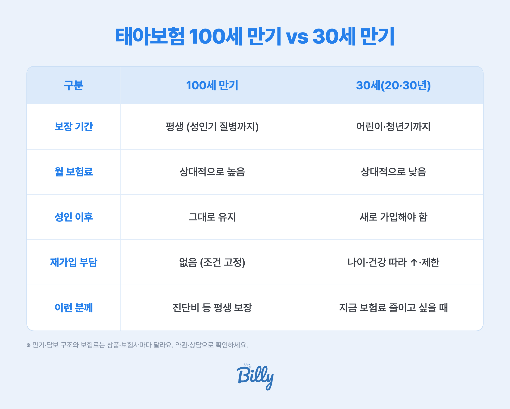

- 태아보험 만기는 크게 100세 만기 vs 30세(또는 20·30년) 만기로 나뉘어요
- 100세는 평생 보장·보험료↑, 30세는 저렴하지만 성인 후 재가입이 필요해요
- 진단비 같은 보장성은 길게(100세·비갱신)가 유리한 경우가 많지만, 예산·목적에 따라 달라 정답은 없어요
태아보험 '만기'가 뭔가요?
만기는 보장이 유지되는 기간이에요. "100세 만기"면 아이가 100세가 될 때까지 그 보장이 살아 있고, "30세 만기"면 30세에 보장이 끝나요.
여기서 자주 헷갈리는 게 납입 기간이에요. 만기(보장 기간)와 납입 기간은 별개라, 보통 20년(또는 30년) 동안만 보험료를 내고 100세까지 보장받는 식으로 설계해요. 즉 100세 만기라고 100세까지 돈을 내는 게 아니에요.
100세 만기 vs 30세 만기, 뭐가 다를까

| 구분 | 100세 만기 | 30세(20·30년) 만기 |
|---|---|---|
| 보장 기간 | 평생 (성인기 질병까지) | 어린이·청년기까지 |
| 월 보험료 | 상대적으로 높음 | 상대적으로 낮음 |
| 성인 이후 | 그대로 유지 | 새로 가입해야 함 |
| 재가입 부담 | 없음 (가입 조건 고정) | 나이·건강 따라 보험료↑·제한 가능 |
| 이런 분께 | 진단비 등 평생 보장을 원할 때 | 지금 보험료 부담을 줄이고 싶을 때 |
그래서 뭐가 유리해요?
결론부터 말하면 "무조건 100세" 도 "무조건 저렴하게" 도 정답은 아니에요. 핵심은 담보 성격에 따라 나누는 거예요.
- 진단비·수술비 같은 보장성 — 성인기 질병(암 등)까지 대비하려면 길게(100세) + 비갱신형이 유리한 경우가 많아요. 어릴 때 가입한 저렴한 조건이 평생 고정되거든요.
- 실손 같은 소모성 — 어차피 갱신되며 바뀌는 담보라, 굳이 무리해서 길게 잡기보다 갱신형으로 두는 게 현실적이에요.
만기 정할 때 체크리스트
- ✅ 비갱신형인지 확인 — 100세 만기라도 갱신형이면 나중에 보험료가 오를 수 있어요
- ✅ 보장성은 길게, 소모성은 갱신으로 나눠 설계
- ✅ 납입 기간(20년·30년)과 보장 기간(만기)을 구분해서 보기
- ✅ 지속 가능한 월 보험료 — 우리 집 예산에서 끝까지 낼 수 있는 선
베이비빌리 태아보험 상담, 이래서 안심돼요
🛡️ 우리 아기 만기·특약, 무료로 설계 점검받아 보세요
100세로 할지, 어떤 담보를 비갱신으로 길게 가져갈지는 상품마다 조건이 달라요. 200만 부모가 쓰는 베이비빌리가 여러 보험사를 한 번에 비교해, 우리 아기에게 필요한 만큼만 짚어드려요. 보험사 영업이 아니라 임신·육아 앱이 중립적으로 — 가입 강요는 없어요.
태아보험 무료로 비교·점검하기 →자주 묻는 질문
최근엔 100세 만기로 길게 설계하는 경우가 일반적이지만, 예산에 따라 30세 만기나 20·30년 만기도 선택해요. 정답이 정해져 있진 않고, 보장 목적과 납입 부담을 함께 봐야 해요.
아니요. 납입 기간과 보장 기간은 별개예요. 예를 들어 20년 동안 보험료를 내고 100세까지 보장받는 식으로 설계할 수 있어요.
보장이 종료돼 필요하면 새로 가입해야 해요. 그때는 나이와 건강 상태에 따라 보험료가 오르거나 가입이 제한될 수 있어요.
꼭 그렇진 않아요. 보험료 부담이 커 중도에 해지하면 오히려 손해예요. 지속 가능한 선에서, 진단비 같은 보장성은 길게, 실손 같은 소모성은 갱신형으로 나누는 조합이 현실적이에요.
만기는 보장이 유지되는 기간이고, 갱신형 여부는 보험료가 주기마다 오르는지를 말해요. 100세 만기라도 비갱신형이면 보험료가 평생 고정돼요. 갱신형 vs 비갱신형 시뮬레이터에서 차이를 확인해 보세요.
함께 보면 좋은 가이드
참고 자료
※ 본 페이지는 생명·손해보험협회와 금융감독원 자료, 베이비빌리 베동 커뮤니티를 기반으로 정리한 일반 정보예요. 만기·담보 구조와 보험료는 상품·보험사마다 다르니, 실제 가입 시 약관과 전문가 상담으로 확인하세요. 특정 상품을 권유하지 않습니다.